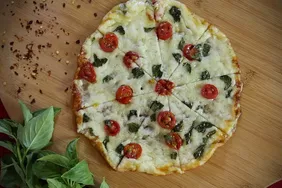

PIZZA

Description
Pizza is a popular dish of Italian origin that consists of a flattened disk of bread dough topped with various ingredients and baked in a hot oven. Some of the common toppings are tomato sauce, cheese, vegetables, meat, and herbs. Pizza can be eaten as a snack, a main course, or a dessert
Pizza is a versatile and delicious food that can suit different tastes and preferences. There are many types of pizza, such as thin crust, thick crust, stuffed crust, deep dish, and more. Each type has its own characteristics and advantages. Some people prefer a crispy and crunchy crust, while others like a soft and chewy one. Some people enjoy a rich and cheesy filling, while others opt for a light and fresh topping. Pizza can be customized to fit any occasion and mood.
Ingredients
- Wheat Flour
- Water
- Cheese(Ideally Mozzarella)
- Tomato Sauce
- Olive Oil
- Meat(Pepperoni)
Steps
- Make the pizza dough: You need to mix flour, yeast, water, oil, sugar and salt in a large bowl and knead it until you have a smooth and elastic dough. Then, you need to let the dough rise in a warm place for about an hour or until it doubles in size. You can also use the slow rise method, which involves using less yeast and letting the dough rise in the fridge overnight. This will give the dough more flavor and texture.
- Make the pizza sauce: You need to cook tomatoes, garlic, onion, herbs and spices in a saucepan over medium heat until they are soft and thick. You can also use tomato paste or ketchup as a base for your sauce. You can adjust the seasoning according to your taste.
- Assemble and bake the pizza: You need to preheat the oven and a baking sheet or a pizza stone to a high temperature (around 240°C or 220°C fan). Then, you need to roll out the dough into a thin circle and transfer it to the baking sheet or the pizza stone. You need to spread the sauce evenly over the dough and sprinkle cheese on top. You can also add any toppings of your choice, such as vegetables, meat, seafood, etc. Then, you need to bake the pizza for about 15 minutes or until the cheese is melted and the crust is golden and crisp.